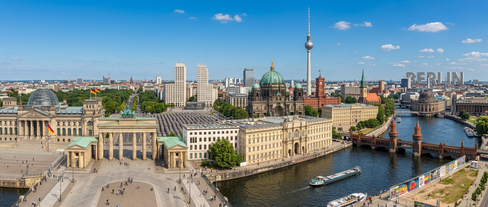
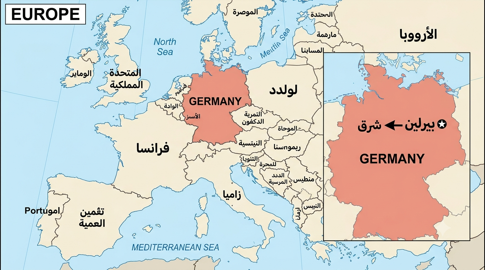
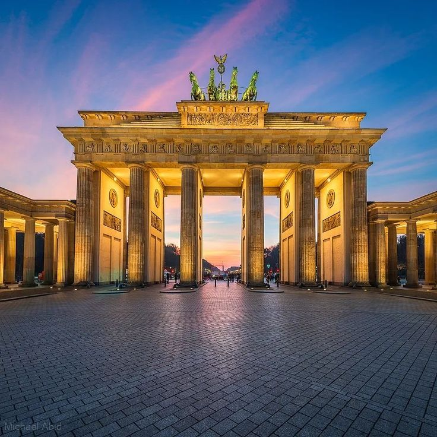
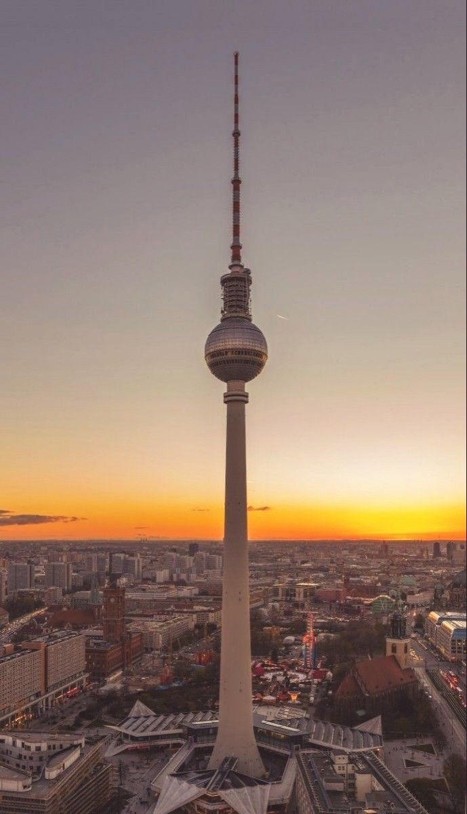
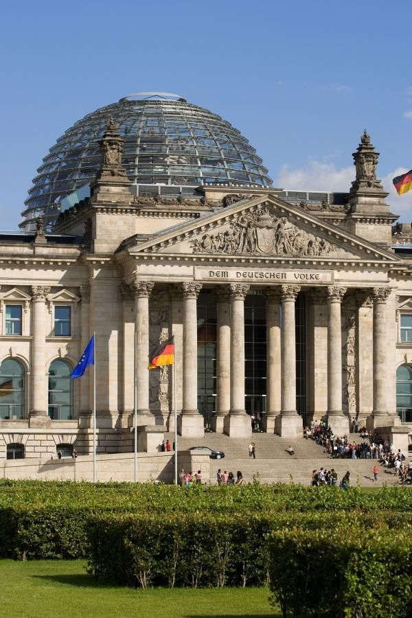
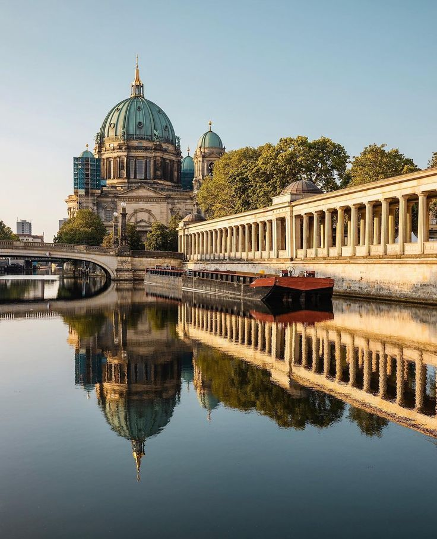
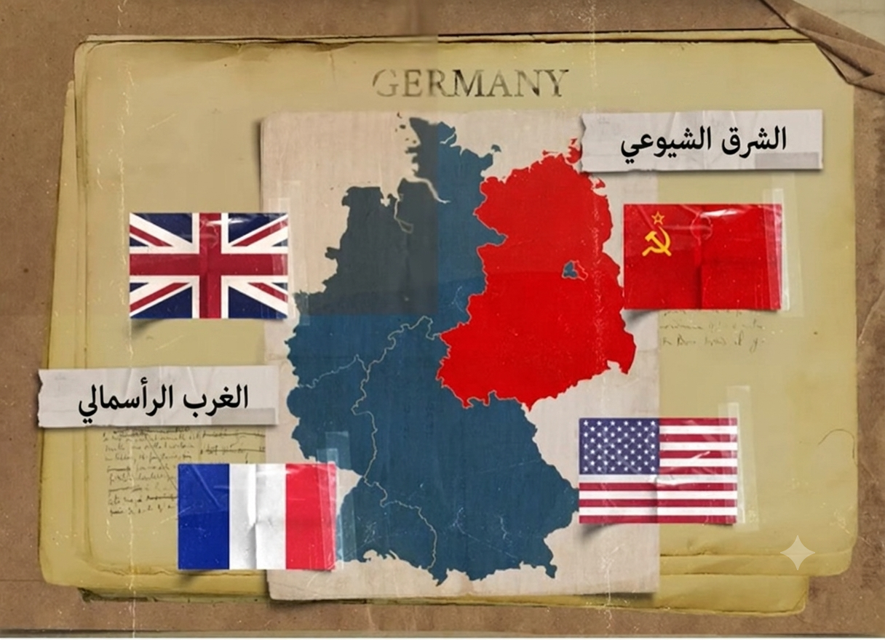

WELCOME
TO BERLIN


برلين موجودة في شرق المانيا





-بعد الحرب العالمية الثانية المانيا اتقسمت لنصين جزء شرق وجزء غرب. كل جزء كان بيدافع عن فكر معين الناس كانت طول الوقت بتهرب من الشرق للغرب لانه اغنى حاولوا يمنعوا الناس انها تهرب .. لكن من خلال ثغرة في برلين كانوا بيقدروا يهربوا ويروحوا للغرب

-في يوم سكان برلين صحيوا الصبح لقوا حيطة كبيرة بتقسم برلين كلهم بالنص فبقى فيه سور محاوط سكان برلين اللي اتقسمت برضو شرق وغرب الشعب كان حاسس انه متحاصر و مش عارفين يشوفوا اهاليهم ولا يروحوا جامعاتهم ولا مدارسهم
وفضلت محاولات الهروب مستمرة و مع كل محاولة للهرب كانت بتزيد طرق تحصين الجدار اكتر واكتر اصبح سورين اتنين و بينهم حواااااجز كتير اوي السور ده استمر ٣٠ سنة